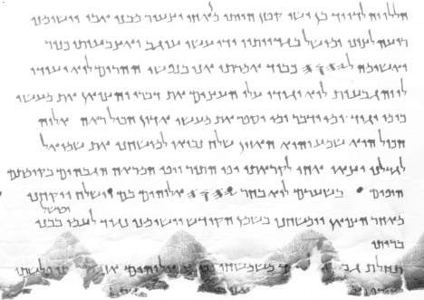

Great Psalms Scroll

- Category
- Biblical
- Cave
- Qumran Cave 11
- Completeness
- Substantial fragment
- Current Location
- Israel Museum, Jerusalem
- Date Approx
- c. AD 30-50
- Description
- The most substantial and best-preserved Psalms manuscript among the Dead Sea Scrolls: five sheets of leather still sewn together, about 4.25 metres long in its surviving body (28 columns, plus separate fragments A-F), discovered in Cave 11 in February 1956 and first unrolled in 1961. It contains 49 compositions. It is not a copy of the whole Psalter: it runs chiefly through Psalms 101-150, in an order different from the Masoretic Psalter, and it mixes canonical psalms with compositions not in the Masoretic Psalter.
- Language
- Hebrew
- Location
- Qumran, Judaean Desert
- Manuscript
- Great Psalms Scroll
- Manuscript ID
- 11Q5 (11QPsa)
- Material
- Parchment
- Period
- Herodian
- Preserved Passages
- Related Books
- Script
- Square Hebrew
- Significance
- Shows that in the 1st century AD the order and contents of the later part of the Psalter were not yet fixed: 11Q5 arranges Psalms 101-150 differently from the Masoretic Text and adds psalms known from the Syriac tradition (151, 154, 155), Sirach 51, and previously unknown hymns, alongside a prose passage crediting David with 4,050 compositions. At the same time it confirms that most of these psalms were already circulating in Hebrew long before the medieval manuscripts, and its strong Davidic emphasis fits the Qumran community's messianic hopes. It is a liturgical collection, not a straight copy of the Masoretic Psalter, and must not be presented as one.
- Work
- Psalms
Verified Checked against the sources listed below. Its core claims — identification, dates, and cited passages — were matched to a scholarly or primary source. About verification
Sources: https://en.wikipedia.org/wiki/Great_Psalms_Scroll
https://ccat.sas.upenn.edu/rak/courses/735/textcrit/Ps151.html
https://Journals.Plos.org/plosone/article?id=10.1371%2Fjournal.pone.0239831
https://ccat.sas.upenn.edu/rak/courses/735/textcrit/Ps151.html
https://Journals.Plos.org/plosone/article?id=10.1371%2Fjournal.pone.0239831
Last reviewed: 2026-10-27